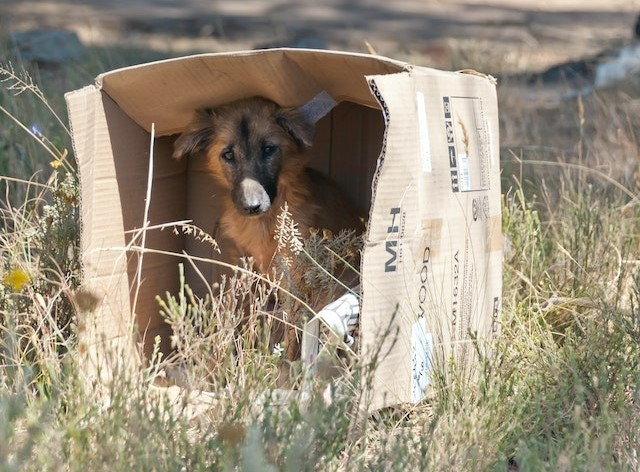

É nas férias de fim de ano que, tradicionalmente, aumenta o abandono de animais. Infelizmente, embora as adoções tenham crescido ao longo dos últimos anos, a verdade é que o número de abandonos não diminui tanto quanto gostaríamos. Não existe nenhum dado oficial sobre o tema no Brasil, mas se analisarmos o grande número de cachorros e gatos em abrigos e lares temporários, é possível observar essa realidade. Segundo uma estimativa da Organização Mundial da Saúde (OMS), há cerca de 30 milhões de animais abandonados no Brasil.
É por isso que neste artigo do PeritoAnimal vamos falar sobre o abandono de animais: o que é possível fazer. Vamos detalhar as principais causas que levam as pessoas a abandonarem seus companheiros, especialmente gatos e cachorros. E já ressaltamos que deixá-los na rua nunca é uma opção. Confira então algumas das dicas que apresentamos com o objetivo de proporcionar mais qualidade de vida com respeito e compaixão pelos animais.
De acordo com a Lei Federal nº 9.605 de 1998, abandonar ou maltratar animais é crime. Além disso, a Lei Federal nº 14.064, sancionada em 2020, prevê pena de até cinco anos de prisão, proibição de guarda e multa para quem fizer isso. O artigo 32 da lei de 1998 deixa claro que praticar ato de abuso, maus-tratos, ferir ou mutilar animais silvestres, domésticos ou domesticados, nativos ou exóticos é crime e o abandono é caracterizado como um tipo de mau-trato. Ainda segundo a legislação de proteção animal brasileira, a pena pode ser aumentada de um sexto a um terço se ocorrer a morte do animal. É preciso destacar que, ao adotar ou comprar um animal de estimação, seja ele um gato, cachorro, coelho, hamster ou qualquer outro, o tutor está se comprometendo a proporcionar o bem-estar dele, além de se responsabilizar por sua saúde e por prevenir possíveis danos que o pet possa causar à população ou ao meio ambiente. Um animal abandonado pode morrer de frio, fome ou desenvolver alguma doença; pode causar acidentes nas ruas e estradas; pode atacar outros animais e pessoas e, consequentemente, aumentar a ocorrência de zoonoses, que são doenças infecciosas transmitidas de animais para humanos e vice-versa. Se você presenciar maus tratos com animais, reúna quaisquer tipos de provas, como fotos, áudios e vídeos e registre um boletim de ocorrência em uma delegacia de polícia.
Um cachorro sadio abrigado em uma casa pode viver em média 17 anos. Nas ruas, essa expectativa de vida chega a ser três vezes menor. Os perigos são muitos. Sozinhos e sem proteção, eles estão sujeitos a atropelamentos, agressões, doenças e envenenamento.
O trabalho voluntário de protetores independentes tenta amenizar esse problema em diversas cidades do país, porém eles estão, em sua maioria, com abrigos superlotados e acumulando dívidas em casas de ração e clínicas veterinárias.
Por dia, a Associação Animais Aumigos, uma das mais atuantes de Salvador (BA), recebe entre 60 e 100 pedidos de resgate. São mensagens que chegam pelo WhatsApp, e-mail, telefone e redes sociais.
“Geralmente a maioria dos pedidos é descarte animal. Tutores que desistem dos seus animais e também pessoas que encontram cães na rua e não sabem o que fazer”, diz Maria Cristina Neves, presidente da associação baiana que mantém mais de 400 cães e gatos em duas sedes fixas e lares provisórios.